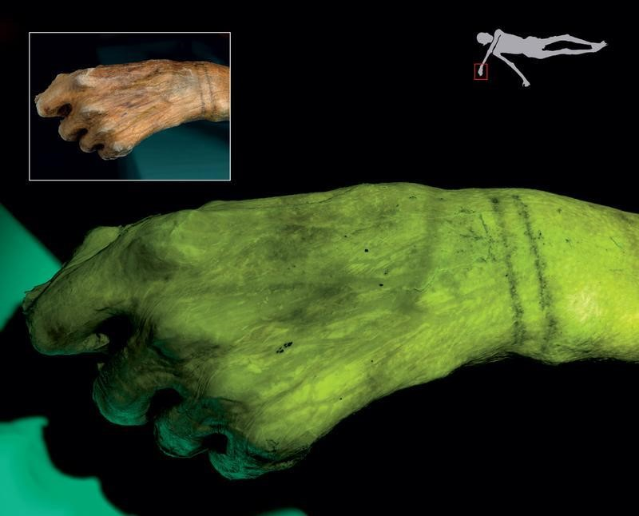
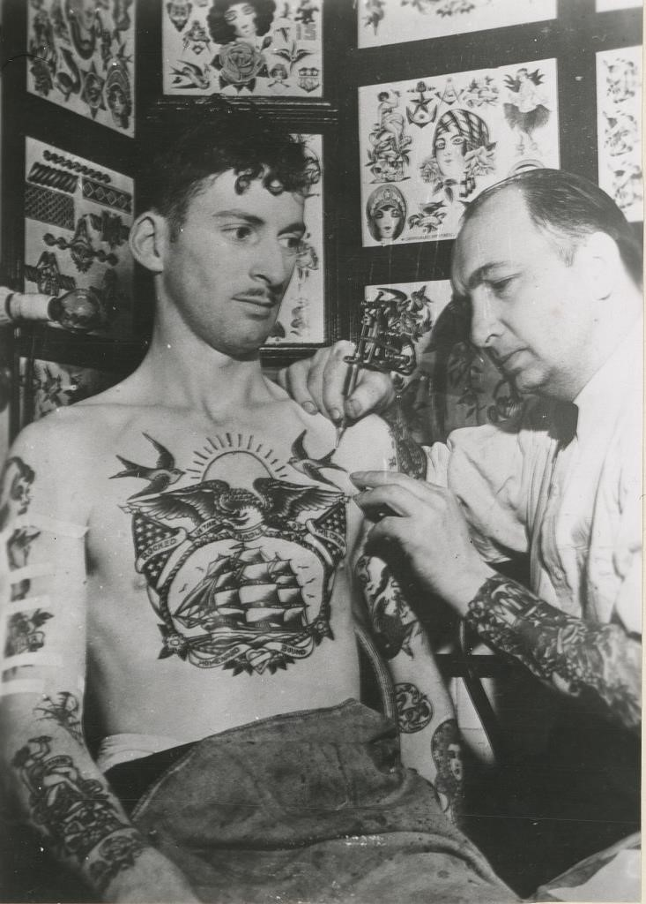

Logar
Nossos Estudios
Cadastrar
Historia da taruagem
Você certamente conhece alguém que tem um desenho gravado na pele. Ou é você que tem uma tattoo? Usadas para marcar um momento importante, fazer uma homenagem ou simplesmente para embelezar o corpo, as tatuagens têm suas origens muito antes de Cristo. Com o passar do tempo e dos acontecimentos históricos, os estilos de tatuagem foram mudando, assim como o público adepto a carregar esse tipo de arte na pele. Para entender melhor a história da tatuagem, suas influências e suas origens, confira o artigo:
Os primeiros registros
O registro mais antigo de uma tatuagem foi descoberto em 1991 no cadáver congelado de um homem da Idade do Cobre. Os restos mortais do homem, que foi apelidado pelos cientistas de “Ötzi”, datam de 3.300 anos antes de Cristo. Em seu corpo foram encontradas diversas linhas na região das costas, tornozelos, punhos, joelhos e pés. Supõe-se que os desenhos tenham sido criados a partir da fricção de carvão em cortes verticais feitos na pele. Depois de estudar o corpo, exames de raio X revelaram degenerações ósseas ao lado de cada uma das tatuagens. Isso levou os cientistas a acreditar que o povo de Ötzi – que são os ancestrais de parte dos europeus – utilizasse os desenhos como uma espécie de tratamento médico para diminuir a dor.

Os romanos e as cruzadas
Enquanto algumas civilizações costumavam adornar seus corpos com desenhos e técnicas variadas, os antigos romanos não faziam tatuagens por acreditarem na pureza da forma humana. Por esse motivo, as tatuagens eram banidas e reservadas apenas para os criminosos e os condenados. Com o passar do tempo, os romanos começaram a mudar sua visão com relação à tatuagem, motivados principalmente pelos guerreiros bretões, que usavam insígnias de honra tatuadas na pele. Assim, eles passaram a admirar a bravura dos guerreiros e os símbolos que eles carregavam. Em pouco tempo, soldados romanos também gravaram suas próprias marcas. Outro fato interessante é que os médicos romanos desenvolveram excelentes técnicas para aplicar e remover os desenhos. Já durante as cruzadas dos séculos 11 e 12, as tatuagens foram usada para identificar os soldados de Jerusalém. Todos aqueles que tivessem o desenho da cruz em seus corpos receberiam um enterro propriamente cristão se fossem mortos em batalhas. O National Geographic ressalta que após as cruzadas a tradição da arte gravada na pele caiu em desuso no Ocidente por um período, mas continuou a crescer em outras partes do mundo.
